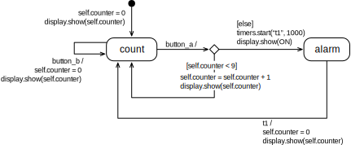

We have created 5 tasks which all let you solve a slightly different problem related to state machines.
The tasks are independent of each other, but the first one is the easiest to get started and the last one is maybe a bit challenging.
Here's an overview:
Counter: You run the example, just to check that all works, and explain the behavior in words.
Shake Light: Create a state machine diagram from code.
Night Light: Extend a state machine diagram, and extend its code.
Switch Light: You get the state machine diagram, but build all code on your own.
Hand Sanitizer Station: You create state machine diagram and code by yourself from a textual description.
Pencil and paper are probably still the best tools for sketching a state machine when you are working on your own. Don't underestimate the value of making quick sketches and iterating on them before you make an electronic version of your diagram for documentation.
Whiteboards or blackboards have the benefit that you can work in groups, if you are physically at the same place.
Drawing applications are often easy to access and use, but do not know that you want to create a special diagram style. Though this is probably your best option. You can create simple state machine diagrams in a shared PowerPoint, to which you have access in Teams. Another option is Draw.io, but it requires you to login with a Google account.
Working Style
There is not a lot to program today in counting the lines of code. The goal is rather to train an approach to system development and problem exploration --- the state machines and Python code are just tools to get there. Therefore:
Make sure at each one in your team follows. In this lab, make sure you are familiar with all the details, and can follow everything. If not all points are clear to everyone, ask your team mates, or vice-versa, explain it to them.
For each task, give everyone a few minutes to think individually. You can only have valuable team discussions if everyone had the chance to think on their own first.
Task 1: Counter
Goal: Get the state machine code running, to check that all works.
Below you find the complete code of an counter based on a state machine. The code contains four parts:
the import statements,
the basis code for the state machine,
the extended state machine, here the actual counter,
the code to start the counter
In the following, you will usually only copy the base state machine (2) and work on the code for the extended state machine (3), including how to start it (4). Sometimes you may want to adjust the import statements if you need access to more elements.
# 1 import statementsfrom utime import ticks_msfrom microbit import button_a, button_b, accelerometer, display, sleep, ImageON = Image.SQUAREOFF = Image.SQUARE_SMALL# 2 base state machineclass StateMachine:""" The following code segment defines a basis state machine. Leave this code as it is. (Or be careful what you do.)"""def__init__(self, timer_names=["t1", "t2", "t3"]):self.active =Falseself.state ="initial"self.timer_names = timer_namesself.timers = {}def _ticks_ms(self):# return int(round(time() * 1000))return ticks_ms()def initial_transition(self, timers):"""Overwrite this method to define the initial transition. Must return the name of the first state."""returnNonedef transition(self, state, event, timers):"""Overwrite this method to define the transitions. `state` - the current state `event` - the triggering event `timers` - to start and stop timers Return the name of the next state, or None to stay in current state."""returnNonedef start(self, name, timeout):"""Start a timer. The name must be t1, t2 or t2. The timeout is given in milliseconds. """self.timers[name] =self._ticks_ms() + timeoutdef stop(self, name):"""Stop a timer."""self.timers[name] =Nonedef _detect_event(self): now =self._ticks_ms()for timer inself.timer_names:if (timer inself.timers) and (self.timers[timer] isnotNone):ifself.timers[timer] < now:self.timers[timer] =Nonereturn timerif button_a.was_pressed():return"button_a"if button_b.was_pressed():return"button_b"if accelerometer.was_gesture("shake"):return"shake"returnNonedef run(self):"""Run the state machine."""self.active =Truewhileself.active:ifself.state =="initial": next_state =self.initial_transition(self)if next_state:if next_state =="final":self.active =Falseself.state = next_state event =self._detect_event()if event isnotNone: next_state =self.transition(self.state, event, self)if next_state:self.state = next_state sleep(100)# 3 the extended state machineclass Counter(StateMachine):"""Counting the number of clicks on button A. If 10 is reached, an "alarm" is shown by switching all LEDs on. The counter can be reset at any time with button B. """def initial_transition(self, timers):self.counter =0 display.show(self.counter)return"count"def transition(self, state, event, timers):if state =="count":if event =="button_a":ifself.counter <9:self.counter =self.counter +1 display.show(self.counter)return"count"else: display.show(ON) timers.start("t1", 1000)return"alarm"elif event =="button_b":self.counter =0 display.show(self.counter)return"count"elif state =="alarm":if event =="t1":self.counter =0 display.show(self.counter)return"count"# 4 starting the machinestm = Counter()stm.run()
Diagram for the Counter

The counter is an electronic version of a hand counter, like the one they use on airplanes to count how many passengers are on board. Ours is made for very small planes --- it can only count to 10.
Run the Counter
Run the counter on the Microbit, and try out if the counter works as you have described.
Task: Inspect the diagram closely, and describe in words how you expect, the counter will work.
Include this description in your report. Make sure to include all details.
What is the function of button_b?
In addition to the textual description, illustrate the functions of the counter using a series of small screenshots.
Task 2: Shake Light
Goal: Create a state machine diagram from given code.
Have a look at the code below, and run it. (We here only show the code of the extended state machine for the shake light, remember to keep the code for the base state machine and the import statements.)
class ShakeLight(StateMachine):"""Switch on the light if you shake the device and turn it off again after 2 seconds. """def initial_transition(self, timers): display.show(Image.SQUARE_SMALL)return"off"def transition(self, state, event, timers):if state =="off":if event =="shake": display.show(Image.SQUARE) timers.start("t1", 2000)return"on"elif state =="on":if event =="t1": display.show(Image.SQUARE_SMALL)return"off"
Task: First, describe the behavior of the shake light in a few sentences.
Task: Draw a state machine that corresponds to the code. Make sure to include all necessary elements.
Night Light
Goal: Extend a given diagram to extends its functionality, and extend the corresponding code.
Above you see the partial state machine of a night light, which depends on the light level, and switches on when it reaches > 100.
Task: Describe the behavior of the shake light in a few sentences.
Task: Extend the state machine diagram so that it also switches the light off again after the level goes under 80.
Task: Add the code for the added functionality and check that it works. Include a series of small screenshots in your report.
class NightLight(StateMachine):"""Periodically read the light level. If the light level is above 100, switch on the light. If it is below 80, switch the light off again. """def initial_transition(self, timers): display.show(Image.SQUARE_SMALL) timers.start("t1", 1000)return"off"def transition(self, state, event, timers):if state =="off":if event =="t1":if display.read_light_level() >100: display.show(Image.SQUARE) timers.start("t1", 1000)return"on"else: timers.start("t1", 1000)return"off"stm = NightLight()stm.run()
Switch Light
Goal: Build all code on your own from a given state machine diagram.
Above is the diagram for a light that can be switched on and off.
Task: Have a close look at the diagram, and describe what it does in words.
Task: Build the entire code for the state machine.
Use the code given below as starter (remember to add the import statements and the base state machine from above).
You only have to fill the content of the functions initial_transition and transition.
class SwitchLight(StateMachine):"""Switch between states off and on by pressing button A.The change between on and off only happens if button A is pressedtwice quickly.State off is represented by a small square,state on with a big square.The transitional states between on and off are shownwith arrows up and down."""def initial_transition(self, timers):# add your code heredef transition(self, state, event, timers):# add your code herestm = SwitchLight()stm.run()
Hand Sanitizer Station
Goal: Create diagram and code by yourself.
Create the state machine for a hand sanitizer.
These machines, as you know, detect that someone puts their hand under the dispenser, then run a motor for 800 milliseconds to dispense some sanitizer.
To avoid double-dispensing, the machine ignores a repeated dispensing for about 2 seconds, that means, you need to wait for 2 seconds before it dispenses another load. (Sometimes irritating if you want a double dose...)
Task: Create such a state machine diagram.
Try to sketch one on your own, each one individually for a few minutes.
Compare your solutions.
Use the state machines to understand the function better. Do you all agree on what the system should exactly do?
Some hints:
Assume that a detected hand is signalled by event shake. That means, if the shale event is detected, the dispenser should dispense a dose by switching on its motor.
Instead of switching on a motor, just show an arrow pointing downwards (Image.ARROW_S) on the display.
Make sure it does activate the dispenser (by showing the arrow) for the 800 milliseconds.
Make sure it does not double dispense within 2 seconds after the first detected shake.
The state machine we came up with has three control states, which we called for ready, dispensing and blocked. The names do not matter, but may indicate what happens in them.
Task: Create the code for the machines. Use below below as starting point.
class Dispenser(StateMachine):def initial_transition(self, timers):# define your initial transition heredef transition(self, state, event, timers):# define your transitions herestm = Dispenser()stm.run()
Task: Document the solution of your dispenser as detailed as possible, to explain to the reader how it works. Include a comic-like sequence of screenshots, too.